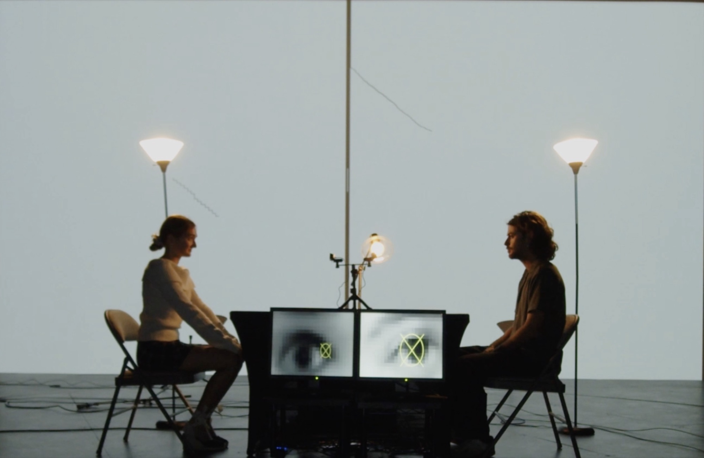

When We Are Two

Two people sit across a dimly lit dinner table and hold eye contact. Webcams track the saccades of both gazes; a custom Max/MSP patch converts the movement into two live line drawings, projected on screens behind each participant, and into a four-channel soundscape, with each participant's eye movement scoring half the audio. The drawing accumulates for as long as the two continue to hold each other's eyes; the sound tracks the same duration.
Staged at CCRMA Stage and at Stanford's Elam Theater as part of the Arts Intensive Showcase. Ongoing since 2023, developed toward a longer touring form.
video documentation